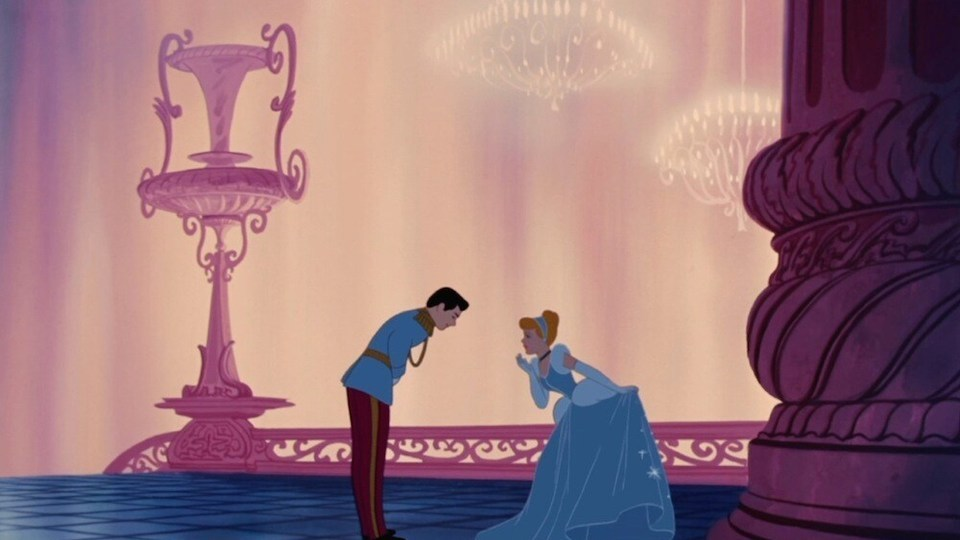
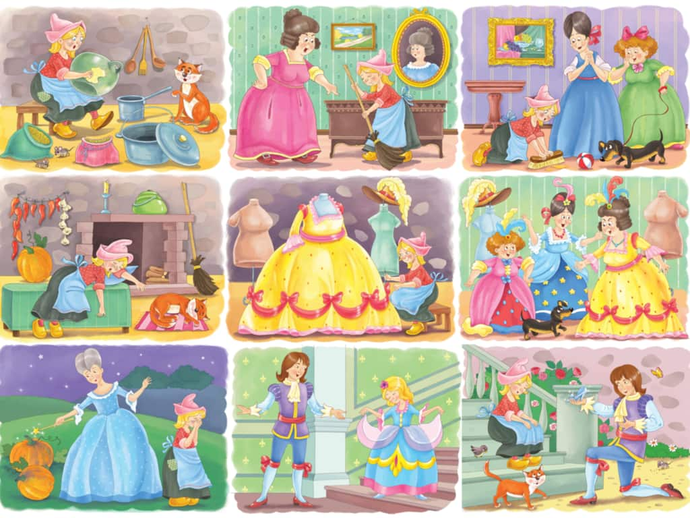

Moral of the story:
“Good people are always rewarded at the right time.”
In this Princess Cinderella story, Cinderella has always been good despite the difficulties she faced. The
Prince found her though she had cinders all over her dress and hair. He fell in love with her innocence and
goodness. Cinderella’s miserable days came to an end. She got married to the Prince and they lived happily
ever after.
